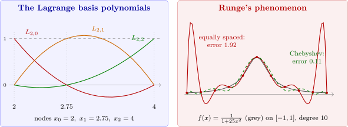

6.1 Interpolation and the Lagrange polynomial
Given \(n+1\) distinct nodes \(x_0,x_1,\dots ,x_n\) and values \(f(x_0),\dots ,f(x_n)\), we seek a polynomial \(P\) of degree at most \(n\) with \(P(x_k) = f(x_k)\) for each \(k\). The construction rests on the polynomials \begin {align*} L_{n,k}(x) &= \prod _{\substack {i = 0\\ i\neq k}}^n\frac {x-x_i}{x_k-x_i}\\ &= \frac {(x-x_0)\cdots (x-x_{k-1})(x-x_{k+1})\cdots (x-x_n)}{(x_k-x_0)\cdots (x_k-x_{k-1})(x_k-x_{k+1})\cdots (x_k-x_n)}, \end {align*}
each of degree \(n\), with the cardinal property \[L_{n,k}(x_i) = \begin {cases}1, & i = k,\\ 0, & i\neq k .\end {cases}\]
Theorem 6.1.1. If \(x_0,\dots ,x_n\) are distinct, there is exactly one polynomial \(P\) of degree at most \(n\) with \(P(x_k) = f(x_k)\), \(k = 0,\dots ,n\). It is the Lagrange interpolating polynomial \[P(x) = \sum _{k=0}^nf(x_k)L_{n,k}(x) .\]
Proof. By the cardinal property, \(P(x_i) = \sum _kf(x_k)L_{n,k}(x_i) = f(x_i)\), and \(P\) has degree at most \(n\). If \(Q\) is another such polynomial, \(P-Q\) has degree at most \(n\) and vanishes at the \(n+1\) points \(x_k\), so \(P-Q = 0\) by Corollary 3.1.3. □

Example 6.1.2. Use the nodes \(x_0 = 2\), \(x_1 = 2.75\), \(x_2 = 4\) to find the second Lagrange polynomial for \(f(x) = \frac 1x\), and use it to approximate \(f(3) = \frac 13\).
Solution. The basis polynomials are \begin {align*} L_{2,0}(x) &= \frac {(x-2.75)(x-4)}{(2-2.75)(2-4)} = \frac 23(x-2.75)(x-4),\\ L_{2,1}(x) &= \frac {(x-2)(x-4)}{(2.75-2)(2.75-4)} = -\frac {16}{15}(x-2)(x-4),\\ L_{2,2}(x) &= \frac {(x-2)(x-2.75)}{(4-2)(4-2.75)} = \frac 25(x-2)(x-2.75). \end {align*}
With \(f(2) = \frac 12\), \(f(2.75) = \frac 4{11}\), \(f(4) = \frac 14\), \begin {align*} P(x) &= \frac 13(x-2.75)(x-4)-\frac {64}{165}(x-2)(x-4)+\frac 1{10}(x-2)(x-2.75)\\ &= \frac {1}{22}x^2-\frac {35}{88}x+\frac {49}{44} . \end {align*}
So \(P(3) = \frac {9}{22}-\frac {105}{88}+\frac {49}{44} = \frac {29}{88} = 0.32955\), an error of \(0.0038\).
The next theorem gives the error of interpolation. Its form, with an unknown point \(\xi (x)\), is the same as that of Taylor’s Theorem, and its proof is the main use of the Generalized Rolle’s Theorem.
Theorem 6.1.3. Let \(x_0,\dots ,x_n\) be distinct points of \([a,b]\) and \(f\in C^{n+1}[a,b]\). Then for each \(x\in [a,b]\) there is \(\xi (x)\in (a,b)\) with \[f(x) = P(x)+\frac {f^{(n+1)}(\xi (x))}{(n+1)!}(x-x_0)(x-x_1)\cdots (x-x_n),\] where \(P\) is the interpolating polynomial.
Proof. If \(x\) is a node, both sides equal \(f(x)\). Otherwise fix \(x\) and define, for \(t\in [a,b]\), \[g(t) = f(t)-P(t)-\bigl (f(x)-P(x)\bigr )\prod _{i=0}^n\frac {t-x_i}{x-x_i} .\] Then \(g(x_k) = 0\) for every node, and \(g(x) = f(x)-P(x)-\bigl (f(x)-P(x)\bigr ) = 0\): so \(g\) has \(n+2\) distinct zeros. By the Generalized Rolle’s Theorem (Theorem 1.1.4), \(g^{(n+1)}(\xi ) = 0\) for some \(\xi \in (a,b)\). Since \(P\) has degree at most \(n\), \(P^{(n+1)} = 0\), and the product is a polynomial in \(t\) of degree \(n+1\) with leading coefficient \(\prod _i(x-x_i)^{-1}\), whose \((n+1)\)st derivative is \(\frac {(n+1)!}{\prod _i(x-x_i)}\). So \[0 = g^{(n+1)}(\xi ) = f^{(n+1)}(\xi )-\bigl (f(x)-P(x)\bigr )\frac {(n+1)!}{\prod _i(x-x_i)},\] which rearranges to the stated formula. □
Example 6.1.4. Bound the error of the approximation in Example 6.1.2, at \(x = 3\) and on the whole of \([2,4]\).
Solution. Here \(f'''(x) = -\frac {6}{x^4}\), whose largest absolute value on \([2,4]\) is \(\frac 6{16} = 0.375\) at \(x = 2\). So \[|f(x)-P(x)|\leq \frac {0.375}{3!}|(x-2)(x-2.75)(x-4)| = 0.0625\,|(x-2)(x-2.75)(x-4)| .\] At \(x = 3\) the product is \(|1\cdot 0.25\cdot (-1)| = 0.25\), so the error is at most \(0.0156\); the actual error is \(0.0038\). On \([2,4]\) the cubic \((x-2)(x-2.75)(x-4)\) has its largest absolute value \(0.5625\) at \(x = 3.5\) (found by setting its derivative to zero and comparing with the end points), so \(|f(x)-P(x)|\leq 0.0352\) throughout \([2,4]\).
Example 6.1.5. A table of \(e^x\) on \([0,1]\) has equally spaced entries with step \(h\). What \(h\) ensures that linear interpolation between adjacent entries has error at most \(10^{-6}\)?
Solution. For \(x\) between nodes \(x_j\) and \(x_{j+1} = x_j+h\), Theorem 6.1.3 with \(n = 1\) gives \[|f(x)-P(x)| = \frac {|f''(\xi )|}{2}|(x-x_j)(x-x_{j+1})|\leq \frac {e}{2}\cdot \frac {h^2}{4} = \frac {eh^2}{8},\] since \(|(x-x_j)(x-x_j-h)|\) is largest at the midpoint, where it equals \(\frac {h^2}4\). We need \(\frac {eh^2}{8}\leq 10^{-6}\), that is \(h\leq 1.72\times 10^{-3}\); a step of \(h = 0.001\) is a convenient choice, with error at most \(3.4\times 10^{-7}\).
Runge’s phenomenon
Theorem 6.1.3 shows that the error depends on the size of \(f^{(n+1)}\) and of the nodal polynomial \(\prod (x-x_i)\). Raising the degree does not always help. For \(f(x) = \frac 1{1+25x^2}\) on \([-1,1]\) with equally spaced nodes, the maximum error is \(0.43\) for \(n = 5\), \(1.92\) for \(n = 10\) and \(2.11\) for \(n = 15\): the interpolants oscillate more and more violently near the ends of the interval (Figure 8). The derivatives of this smooth-looking function grow very fast, and the nodal polynomial for equally spaced nodes is much larger near the ends than in the middle. Choosing instead the Chebyshev nodes \(x_i = \cos \frac {(2i+1)\pi }{2n+2}\), which crowd towards the ends and minimize \(\max |\prod (x-x_i)|\), gives errors \(0.56\), \(0.11\) and \(0.083\) for \(n = 5, 10, 15\), decreasing as they should. In practice, high-degree interpolation at equally spaced points is avoided, and piecewise polynomials (splines, Section 7) are used instead.
Questions on this section
Stuck on something here? Ask below and it stays attached to this topic.